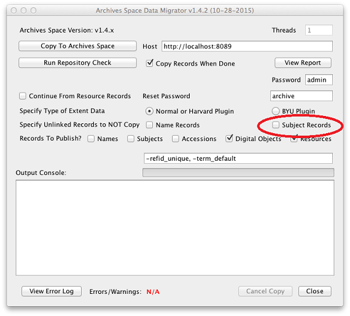

<!doctype html>
<html>
	<head>
		<meta charset="utf-8">
		<meta name="viewport" content="width=device-width, initial-scale=1.0, maximum-scale=1.0, user-scalable=no">

		<title>Davis ArchivesSpace Presentation</title>

		<link rel="stylesheet" href="css/reveal.css">
		<link rel="stylesheet" href="css/theme/black.css">

		<!-- Theme used for syntax highlighting of code -->
		<link rel="stylesheet" href="lib/css/zenburn.css">

		<!-- Printing and PDF exports -->
		<script>
			var link = document.createElement( 'link' );
			link.rel = 'stylesheet';
			link.type = 'text/css';
			link.href = window.location.search.match( /print-pdf/gi ) ? 'css/print/pdf.css' : 'css/print/paper.css';
			document.getElementsByTagName( 'head' )[0].appendChild( link );
		</script>
	</head>
	<body>
		<div class="reveal">
			<div class="slides">
				<section data-markdown>
					<script type="text/template">
						# When Your Metadata is Messydata:
						## Subject Cleanup via the ArchivesSpace API


						###### Lora J. Davis
						###### Digital Archivist
						###### Johns Hopkins University
					</script>
				</section>
				<section>
					<section data-markdown>
						<script type="text/template">
							## ArchivesSpace Migration as an Opportunity
						</script>
					</section>
					<section data-markdown>
						<script type="text/template">
							## Needs

							- Have subject terms in ASpace
							- Subject terms that are consistent (e.g. minimize duplication)
							- Subject terms that are controlled (e.g. from an appropriate authority file)
					</script>
					</section>
					<section data-markdown>
						<script type="text/template">
							## Wants

							- Make our data "linked data ready"
							- Convert existing LCSH terms to FAST headings
							- Gain facility in using the ArchivesSpace API

							<aside class="notes">
								We're looking forward to a future where our archival description lives in the same index as our Institutional Repository and MARC catalog records, and technical services is migrating those systems to FAST headings as well.
								Using subjects as a way to colocate records from various sources.
								Switched to FAST because FAST is optimised for Linked Data because headings have identifiers, unlike LCSH.
								Yea, may be loss of detail in converting to FAST, but we cared more about being Linked Data ready than preserving granularity.
								Had a cataloger assist with conversion.
							</aside>
						</script>
					</section>
				</section>
				<section data-markdown>
					<script type="text/template">
						### Step 1:
						### Migrate

						

						<aside class="notes">
							Migrated into ArchivesSpace 1.4.2 with container management plugin.  Ran barcoder.  Migrated WITHOUT subjects.
						</aside>
					</script>
				</section>
				<section>
					<section data-markdown>
						<script type="text/template">
							### Step 2a:
							### Convert AT LCSH Subjects to FAST

							

							<aside class="notes">
								* Exported existing subject terms from AT tables.
								* Used OpenRefine to run the list of existing LCSH headings against OCLC's FAST API to convert headings to FAST.  Also created some new headings (result of compound headings being broken apart).
								* Had a cataloger review this work (about a week).
								* Added FAST IDs into Authority ID field.
								* Questions about this process should be directed to Eric.
							</aside>
						</script>
					</section>
					<section data-markdown>
						<script type="text/template">
							### Step 2b:
							### Convert AT LCSH Subjects to FAST

							

							<aside class="notes">
								* Added FAST IDs into Authority ID field.
								* Questions about this process should be directed to Eric.
							</aside>
						</script>
					</section>
				<section data-markdown>
					<script type="text/template">
						## Step 3:
						## Create JSON

						- Follow JSON model
						- One line per subject record
						- Warning about special characters, character encoding issues, and byte order marks
					</script>
				</section>
				<section data-markdown>
						<script type="text/template">
							## Step 4:
							## POST Subjects to ArchivesSpace

							```
							import json
							import requests

							baseURL = 'http://YOURBACKENDURL:8089'
							user='YOURUSERNAME'
							password='YOURPASSWORD'

							auth = requests.post(baseURL + '/users/'+user+'/login?password='+password).json()
							session = auth["session"]
							headers = {'X-ArchivesSpace-Session':session, 'Content_Type':'application/json'}

							with open('YOURJSONFILE.json') as jsonfile:
							    for line in jsonfile:
							        json_obj = json.loads(line)
							        json_string = json.dumps(json_obj)
							        subjects = requests.post(baseURL+'/subjects', headers=headers, data=json_string).json()
							        print subjects
							```
						</script>
					</section>
						<section data-markdown>
							<script type="text/template">
								## All Done!!!

								- Uh, nope
								- We've got:
								  - Subject records
									- Accession records
									- Resource records
								- But we don't got:
								  - Subject records that are *linked* to accession and resource records
							</script>
						</section>
							<section data-markdown>
								<script type="text/template">
									## Step 5:
									## GET **all** Subjects, Resources, and Accessions

									```
									import json
									import requests

									baseURL = 'http://YOURBACKEND:8089'
									user='USERNAME'
									password='PASSWORD'

									auth = requests.post(baseURL + '/users/'+user+'/login?password='+password).json()
									session = auth["session"]
									headers = {'X-ArchivesSpace-Session':session, 'Content_Type':'application/json'}

									endpoint = '/repositories/3/accessions'
									arguments = '?page=1&page_size=3000'


									output = requests.get(baseURL + endpoint + arguments, headers=headers).json()
									print(json.dumps(output.get('results'), indent=2))
									```

									- Python script to GET all subjects, including:
									  - Subjects that were already in (AAT genre forms, local terms, university functions, etc.)
										- FAST subjects we've just created
								  - Python script to GET resources and accessions while we're at it
								</script>
							</section>
							<section data-markdown>
								<script type="text/template">
									## Step 6:
									## Map Subjects to Resources/Accessions

									- Use JSFiddle to extract the URI and external_ID fields from all Subjects JSON
									- Map those URIs and external_IDs to Resources and Accessions in an Access database
									- Merge it all together with JSFiddle
								</script>
							</section>
							<section data-markdown>
								<script type="text/template">
									## Step 7:
									## Create JSON

									- Follow JSON model for Resources and Accessions
									- One line per Resource/Accession record
									- Warning: We thought we'd be "smart" and lump resources and accessions together - don't do this.  Happy to explain in greater detail why, but essentially there's versioning issues that must be kept in mind.
								</script>
							</section>
							<section data-markdown>
								<script type="text/template">
									## Step 1:
									## POST Resources and Accessions to ArchivesSpace

									```
									import json
									import requests

									baseURL = 'http://YOURBACKENDURL:8089'
									user='YOURUSERNAME'
									password='YOURPASSWORD'

									auth = requests.post(baseURL + '/users/'+user+'/login?password='+password).json()
									session = auth["session"]
									headers = {'X-ArchivesSpace-Session':session, 'Content_Type':'application/json'}

									with open('YOURJSONFILE.json') as jsonfile:
									  for line in jsonfile:
										  json_obj = json.loads(line)
											uri_print = json_obj['uri']
											json_string = json.dumps(json_obj)
											pushit = requests.post(baseURL + uri_print, headers=headers, data=json_string).json()
											print pushit
									```
								</script>
							</section>
							<section data-markdown>
								<script type="text/template">
									## Resources

									- "The Triad":
										- Valerie Addonizio, Archivist, vaddoniz@jhu.edu
										- Lora Davis, Digital Archivist, ljdavis@jhu.edu or @lorajdavis
										- Eric Hanson, Digital Content Metadata Specialist, ehanson8@jhu.edu
									- GitHub:
									  - JHU - https://github.com/jhu-archives-and-manuscripts
										- Personal - https://github.com/lorajdavis/
										- Thank you for sharing!
									- ArchivesSpace API documentation - http://archivesspace.github.io/archivesspace/api/
								</script>
							</section>
						</section>
					</section>
				</section>
			</div>
		</div>

		<script src="lib/js/head.min.js"></script>
		<script src="js/reveal.js"></script>

		<script>
			// More info https://github.com/hakimel/reveal.js#configuration
			Reveal.initialize({
				history: true,

				// More info https://github.com/hakimel/reveal.js#dependencies
				dependencies: [
					{ src: 'plugin/markdown/marked.js' },
					{ src: 'plugin/markdown/markdown.js' },
					{ src: 'plugin/notes/notes.js', async: true },
					{ src: 'plugin/highlight/highlight.js', async: true, callback: function() { hljs.initHighlightingOnLoad(); } }
				]
			});
		</script>
	</body>
</html>
